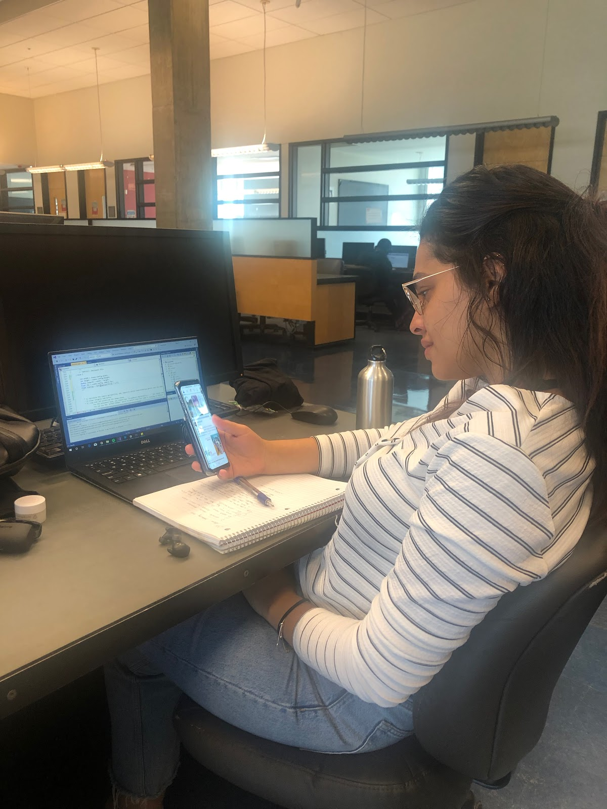
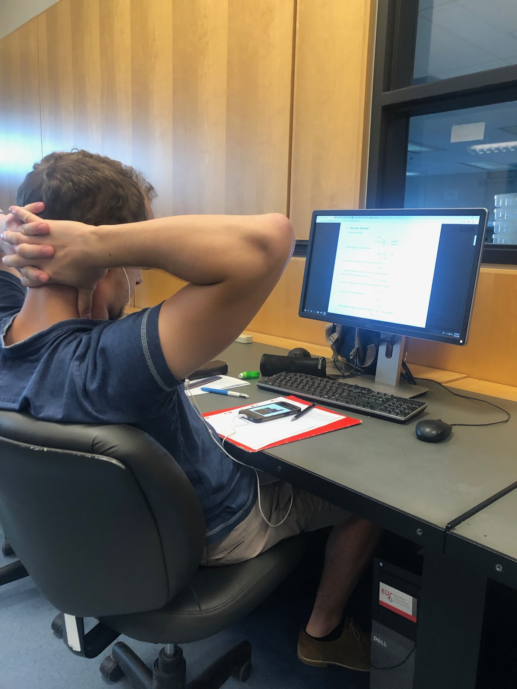
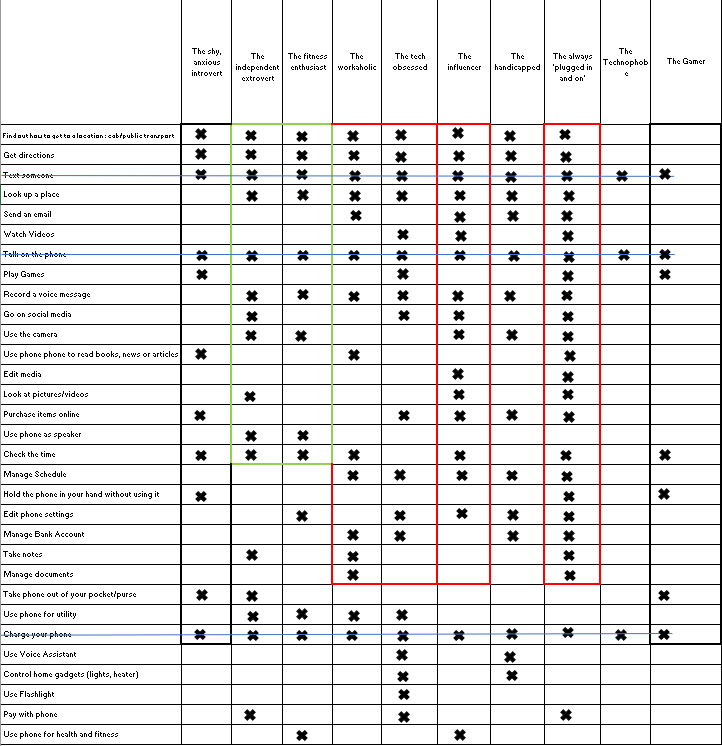
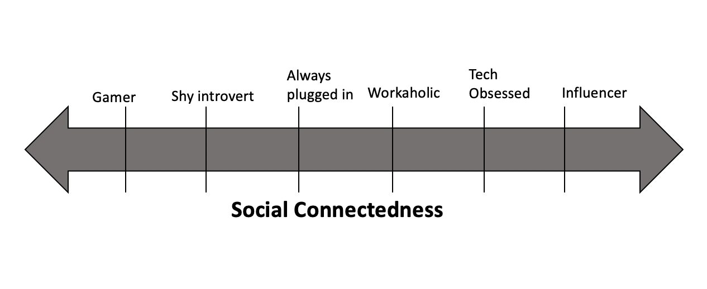
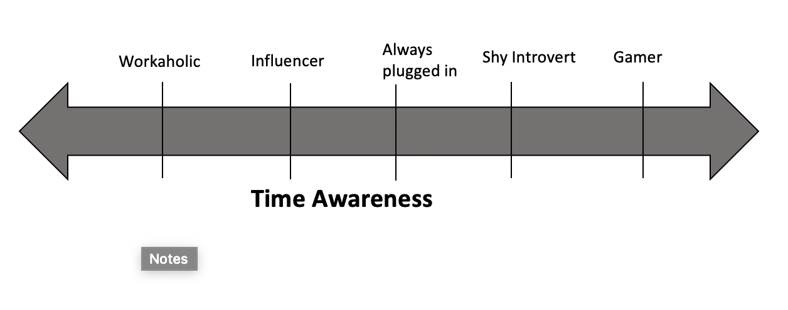
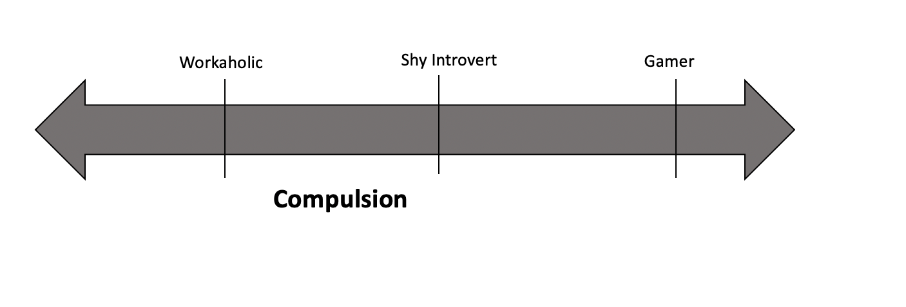
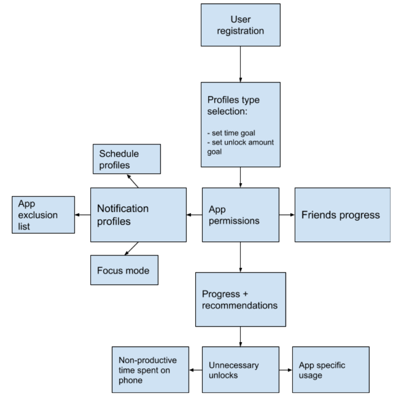

Observations

School Library
18/09/2019 11h AM - Trottier 5th Floor
A student had her laptop open and was doing school work. As we can see in the photo, she was coding. While she was working, she started getting frustrated, as it appeared that she was stuck on a problem or on a line of code and couldn’t continue. She tried many solutions as we could see her writing some lines, running her code, erasing it and trying again. After a few minutes of frustration, she picked up her phone and opened facebook. Instead of asking for help or trying to debug, her first instinct was to pick up the phone and go on social media.
Studies have shown that using social media releases dopamine and oxytocin. When these two are released, especially oxytocin, they have a lot of positive effects on the body: lowered stress levels, feelings of love, trust and empathy. When the student logged into her facebook account, we could see how it affected her as her shoulders started relaxing. After about 10 minutes, she put down her phone and went back to her assignment.
School Library

18/09/2019 19h05 - Trottier 5th Floor
A student was studying on the Trottier computers. He had his physics notes open and was doing a lot of practice problems. He was also listening to music while working. After a while, he picked up his phone. We saw that he picked it up to change the music he was listening to. However, instead of putting the phone down and continue studying, the student opened facebook. He started scrolling down on his feed for a few minutes. Then he started watching videos, scrolling down after each video to find the next one. 25 minutes later, he was still watching videos.
We see here that the student originally picked up his phone with a very specific task in mind: Change the song he was listening to. However, picking up the phone made him open his social media account and waste about 25-30 minutes. This shows how easy it is to lose track of time when we’re on social media.
People walking on the street
17/09/2019 9h16 - Corner of Sherbrooke St. & University St.
The entire class went outside to observe how people use their cell phones when walking on the street . What we observed was that when walking, most people used their phones to listen to music. Some were holding the phones in their hands even when they were not actively using it (mostly women), and others simply had their phones in their pockets. The most common behaviour we saw was that people always picked up their phones when they stopped moving, like when waiting at a red light, for example or getting to the bus stop and waiting for the bus. As soon as they stopped moving, most people pulled out their phones and unlocked it, even if they had no specific goal or task in mind. This shows how reaching for our smartphone has become a compulsive behaviour, an action that we subconsciously make without even thinking about it, even when we don’t need it.
Coffee Place
17/09/2019 15h23 - Milton B
A guy walked into the coffee place, ordered a coffee and sat down at a table. It was clear that he was a student from the McGill Hoodie he was wearing. He sat down at a table for four and he was clearly waiting for his friends. As soon as he sat down, he picked up his phone. We could see him texting at first, and then logging into his social media accounts such as facebook and instagram. Whenever he made eye contact with someone, he would quickly glance back down at his phone to avoid it.
This shows how people use their smartphones to avoid awkward social situations, or when they’re feeling lonely. This observation shows that people also use their phones as a “security blanket” to relieve feelings of anxiety.
Problem Statement
After observing many users, one pattern we saw is that people have trouble staying off their phones for a long time.
When doing an assignment or filling up a job application for example, as soon as the task starts getting boring or frustrating, people reach out for their phones.
When people are in an awkward situation, waiting alone for their friends at a restaurant, or avoiding eye contact, people reach out for their phones.
In his article, Harris said that “the average person checks their phone 150 times a day. Why do we do this? Are we making 150 conscious choices?”
The second thing we observed is that once people start using their phones, very few put the phone away after a few minutes. Instead, we see a common pattern where people start scrolling down endlessly or opening new apps and watching new videos.
Are users aware of how much time they’re spending on their phone? Most smartphones nowadays track your usage or your “screen time”. But how effective is it? When people pick up their phones, they don’t plan on scrolling down for hours. They usually mean to use it to complete one specific task that shouldn’t take more than a minute. However, they end up getting distracted and sidetracked.
Instead, imagine if technology companies empowered you to consciously bound your experience to align with what would be “time well spent” for you. Not just bounding the quantity of time you spend, but the qualities of what would be “time well spent".
[Harris]
Personas
List Distinguishing Behaviors
| Listen to music |
Get directions |
| Reply to a text |
Send an email |
| Talk on the phone |
Send a picture |
| Listen to a podcast |
Watch videos |
| Look up places to eat/go out |
Take pictures |
| Take videos |
Check the time |
| Check bus schedule |
Play games |
| Watch videos |
Read articles |
| Read books |
Check mycourses |
| Check the weather |
Go on social media |
| Browse the web |
Lookup calendar/schedule |
| Take notes |
Set an alarm |
| Set a reminder |
Use the calculator |
| Pay bills |
Use phone for online shopping |
| Check bank account |
Order food |
| Save contact |
Read news |
| Video Call |
Turn volume up/down |
| Put phone on silent |
Use phone as speaker |
| Put a case |
Unlock/Lock the phone |
| Get notifications |
Charge your phone |
| Use voice assistant (Siri/Google assistant/ Bixby/ Alexa) |
Take phone out of your pocket/purse |
| Rearrange apps |
Hold the phone in your hand without using it |
| Zoom in using the camera |
Control home gadgets (lights, heater, etc.) |
| Turn on/off the flashlight |
Open an app |
| Fill in documents |
Download an app |
| Sign papers |
Take pictures of class notes |
| Communicate with people at work |
Unlock car |
| Record a voice message |
Check other devices location and battery life |
| Connect to wifi |
Edit a picture/video |
| Call a taxi |
Get an uber |
| Look at pictures/videos |
Send money to others |
| Use tap to pay |
|
Eliminate or group duplicate and similar tasks
| Find out how to get to a location : cab/public transport |
Get directions |
| Check bus schedule |
Get Directions from an app |
| Call a taxi |
|
| Get an Uber |
Text someone |
|
Send a snap |
|
Reply to a text |
| Look up a place |
Send an email |
| Lookup a place to eat/go out |
Send an email |
|
|
| Watch Videos |
Talk on the phone |
| Listen to podcast |
Video Call |
| Watch videos |
Phone call |
|
|
| Play games |
Record a voice message |
| Play games |
Record a voice message |
|
|
| Go on social media |
Use the camera |
| Go on Facebook |
Take pictures |
| Watch friends’ stories on instagram |
Take videos |
|
Zoom in using the camera |
| Use phone phone to read books, news or articles |
|
| Read books |
Edit media |
| Read articles |
Edit picture/video |
| Read news |
|
|
Purchase items online |
| Look at pictures/videos |
Use phone for online shopping |
| Look at pictures/videos |
Order food |
|
|
| Use phone as speaker |
Check the time |
| Use phone as speaker |
Check the times |
|
|
| Manage Schedule |
Hold your phone in your hand without using it |
| Lookup calendar/schedule |
Hold the phone in your hand without using it |
|
|
| Edit phone settings |
Manage Bank Account |
| Put phone on silent |
Pay bills |
| Turn voluem up/down |
Send money to others |
| Rearrange apps |
Check bank account |
| Unlock/Lock the phone |
|
| Connect to wifi |
Manage documents |
|
Fill in documents |
| Take notes |
Sign papers |
| Take notes |
|
| Take pictures of class notes |
Take phone out of your pocket/purse |
|
Take phone out of your pocket/purse |
| Use phone for utility |
|
| Check the weather |
Charge your phone |
| Set an alarm |
Charge your phone |
| Use the calculator |
|
| Set a reminder |
Use Voice Assistant |
| Check other devices location and batter life |
Use voice assistant (Siri/Google assistant/ Bixby/ Alexa) |
|
|
| Control home gadgets (lights, heater) |
Use Flashlight |
| Control home gadgets(lights, heater, etc.) |
Turn on/off the flashlight |
|
|
| Pay with phone |
Use phone for health and fitness |
| Use tap to pay |
Track health data |
|
Follow workouts |
|
Monitor heart rate and blood pressure |
Draft Performers for each task




Goal
When studying, Marc-Antoine often finds himself getting distracted by his phone, especially when he’s doing a long assignment task. When he picks up his phone, he often loses track of time and ends up using it longer than he originally intended to. His goal is to decrease his smartphone usage, especially when he’s studying or when he’s in class.
Goal
At school, Louise doesn’t have many friends. She’s always on her phone. She’s very active on social media, has thousands of followers on instagram and twitter, as well as on facebook. She’s always making new posts, uploading photos and sharing articles. She found that she uses her phone to connect with people and make a lot of friends online. She always reaches out for her phone when she finds herself in an awkward situation.Louise spends 8 hours a day on her phone and her goal is to reduce her smartphone usage.
Goal
Michael is addicted to his online games. He often finds himself choosing staying home and playing games on his phone over going out with his friends or studying. His grades started dropping and his goal is to reduce his smartphone usage and stop being addicted to his online games to improve his grades and his overall GPA.
Use case scenarios
Use case 1: The user wants to take a small break while studying
The app will include a setting to stop notifications while the user is studying to not further distract him. He will only receive a notification if ends up spending more time than he intended to during his break.
Use case 2: The user is starting to get annoyed by his usage limitations on the phone
Getting more rewards by participating in more challenges with friends will push the user to keep respecting his usage limit.
Use case 3: The user just started downloading the app and is not sure about starting to reduce his usage. He also is not too tech savvy
With the easily customized app setup, the simplistic UI and the challenges, the user will have an enjoyable experience trying the app. The measurable progress will also allow the user how much his usage has improved and will not require any effort to figure out how the app works
Related Products
The two most well known alternatives are Apple’s screen time and Google’s digital well being. These tools are baked right into each operating system and aim to help users to limit how much they’re using their phones.
Both Apple and Google show phone usage by app in a visual way to let you see how much time you spend with your phone. With Digital Wellbeing, you’ll see a pie chart as soon as you open it, with the amount of time, unlocks, and notifications received all front and center. With Screen time, the user is first greeted with a daily average in the form of a graph for the current week. Then the user can have a more detailed view of his activity just by pressing the “See All Activity” button. This allows the user to then see usage by category for the current week, the most used apps, the number of pickups per day and the amount of notifications. Notifications are also broken down by app and time, and it also shows the longest time that you used your phone without putting it down.
These tools also allow you to limit how much you use your apps. With Android, all you need to do is enter your Dashboard and tap an app to set a timer. Once the limit is reached, the app icon will be grayed out and if you try to open it, it will let you know that the timer has run out. Apple also allows timers, but offers more options to set limits. Once you tap the App Limits tab, you’ll be able to set limits for categories of apps (Social networking, entertainment, games, etc). You can even choose the apps you want to limit that are inside these categories, as well as set a timer for individual apps outside these categories and also websites. You can also set apps that are always allowed, block inappropriate content and privacy restrictions. Finally, there’s also a feature called Downtime that shuts down all apps except for the ones you set as always allowed. Once the limit is reached, the limited app icons will dim, and a tiny hourglass will appear next to the app name. If the user tries to open the app anyways he will be greeted by a full screen prompt asking him if he wants to just quit the app, ignore the limit for 15 more minutes or for the whole day.
Apple and Google have both Do Not Disturb tools that allow the user to set a period of time where he does not want to receive any notifications or calls. Google’s equivalent of Do Not Disturb called Wind Down goes even further and grays out the screen to help the user fall asleep.
While these tools offer a lot of options as to how the user would like to limit their usage, the setup process takes too much time and is too intricate for regular users. These are also punitive and restrictive methods where most users end up either removing all app limits out of frustration. These limits are also not dynamic and rely on the user to set his own limits, people’s schedules and usages are not always the same throughout the week and vary frequently.
The other problem is that everyone uses applications differently. While Facebook and Twitter might distract users it is also very helpful for messaging when you just want to contact someone instead of emailing. These tools would count this time on twitter and then limit access to them.
Nowadays, we use smartphones to do almost everything: to schedule events, to work, to communicate with friends and family, to read the news and watch videos. They are powerful tools that help us manage our daily lives. Users don’t like to be forcibly interrupted while they are on specific workflow. Finally it is also too easy to avoid these limits by just a press of a button to ignore the limit for 15 minutes or for a day.
There are also apps like Space, Flipd and Forest that lets users track their daily phone usage and screen time. These apps also block access to specific apps that the user sets and they rely on emotional attachment where you have to take care of your own tree in the Forest app. They also get you to challenge your friends to see who can reach his goals the most (Space). These apps again rely on the user to set his own limits and have the same problems as the built in tools that Apple and Google have implemented. They try to add challenges, achievements or make the user emotionally attached but as long as users do not have the motivation to reduce his usage these extra features do not have any impact on the users. Finally, for these apps to work on iOS users have to install profiles which are reserved for enterprise and can be used by the company to collect data on their users which is a breach of the user’s privacy.
Products Comparative
Instead of focusing on blocking and restricting access to apps, our system is going to focus on positive reinforcement, there are no limits or restrictions, the app will focus on motivating the user to spend less time on their phone, make him aware of how much time he saved each day and how it’s improving his life. The setup process for screen time tools are usually time consuming and confusing for regular users so our app will focus on a short guided setup process that is customized to each user depending on his usage and occupation. The app will also be overall easy to navigate and the usage data will be illustrated in a simple way.
Our app is also going to tell the user explicitly what data we will need access to and what it will be used for to respect their privacy. Another problem with these apps is that they do not focus on motivating the user. They end up getting frustrated and drop any limits that they sent. By adding progress rings and a way to challenge the user we intend on keeping him committed to his goal and to share their progress with friends or the community he is in. Users will also get a summary of their usage so they have a better idea of their daily usage.
The app will help our personas in the following ways:
For Marc-Antoine, the student who get easily distracted and loses track of time when using the internet, the app will send him notifications after spending an extensive time on the app. These notifications will not annoy the user but will just make him aware if he goes over the limit in each app. Even with no restrictions, with the easy setup process and the built in challenges and rewards will keep him committed to his goal of reducing his usage.
With the motivational aspect of our app and the notifications Louise will be more aware of her usage, stop scrolling through social networks and start taking her life into her own hands.
Finally, Michael gets most of his entertainment by playing games and so by implementing the progress rings and the challenges with friends, Micheal will enjoy reducing all of his usage using the app and see it more as a game.
High Level Design

For this project no pre-existing hardware tools are required. The interface is app based. Once signed up the user will be asked a sequence of questions to determine the optimal profile for them. The user can then set their unlock frequency and phone usage goals. There will be a notifications panel where the user can schedule and set certain notification profiles and set an app exclusion list. On "focus mode" the app will block all notifications for the time selected and push them all once this focus period is over. Additionally the user can add friends and view their progress. The user will be able to challenge his friends and be rewarded for spending less time on his phone.
Feasability Study
Team Expertise:
Lea Akkari: Java, C, HTML, CSS, Python, VHDL, Javascript
Abed Atassi: Java, C, Git, HTML, Bash, Python, C++, JavaScript, React, SCSS, Swift, Vue.js, Restful Webservices
Mark Kuhn: C, Java, Javascipt, HTML, CSS, JQuery, NodeJS, MongoDB
To ensure the achievability of this project, the tasks have been split up to match each team members skills. We will have to team members working on the back-end of the app and one team member working on the front-end/interface of the app. The interface is crucial since it will have to motivate the user to use the app.
Getting the users app usage will be implemented using Androids API.
We will not be needing any hardware developments for our project since our app can be used on any android device.
To ensure we are on schedule, every user will be logging their hours and we will be meeting as a team weekly. Github will be user for version control.
We are confident that 20-25 hours per team member will suffice to finish this project.